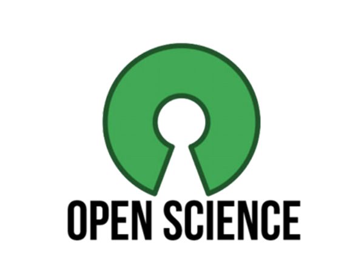
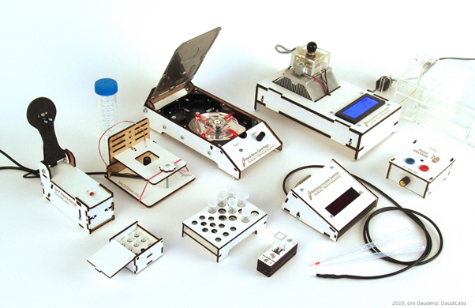
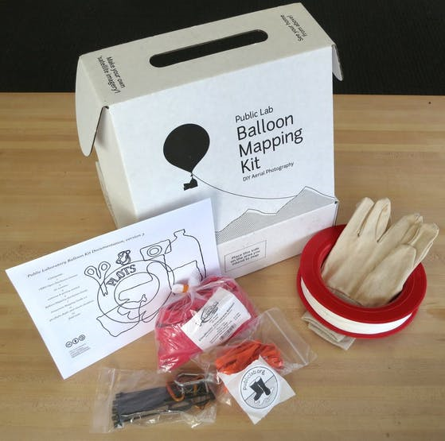
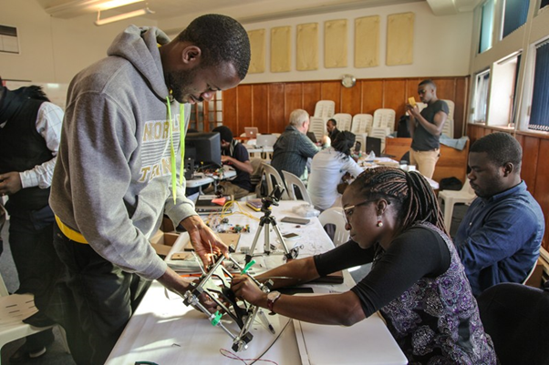

Section Editor Bastian Greshake Tzovaras. Version 1.0
Published by: LIBER Citizen Science Working Group
Last updated: 2024-05-23
Created: 2022-04-19
Language: English (United Kingdom)
Created by: Editorial Team
About the Book
Open Science Meets Citizen Science
Section Editor Bastian Greshake Tzovaras
v1.0, 2024
Series: Citizen Science for Research Libraries — A Guide
Co-Editors-in-Chief: Thomas Kaarsted & Simon Worthington. Correspondence simon.worthington@tib.eu. Editors: Alisa Martek and Dragana Janković. Reviewers: Dr Raphaëlle Bats, Sara Decoster, Jitka Stilund Hansen, Tiberius Ignat, and Mitja V. Iskrić.
Editorial Committee: Paul Ayris (Chair), Bastian Greshake Tzovaras, Jitka Stilund Hansen, and Kirsty Wallis.
Multi-format production: #NextGenBooks – Open Science Lab, TIB – ADA Publishing Pipeline. CSS template production courtesy Raquel Perez de Eulate, Interpunct Studios – Interpunct.dev. Design based on template design: Geralda van der Es/ SPRESSO.
Print and PDF design template (CC BY-SA). Multi-format template (CC BY-SA). Fonts: CrimsonText and Lato, these fonts are licensed under the SIL Open Font License (OFL). Free and Open Source Software used in production – Fidus Writer (GNU AFFERO GPL), Vivliostyle (GNU AFFERO GPL).
Cover image: European Space Agency (ESA), ASAR global monitoring Mode of the Antarctic. The material is ESA copyright and is supplied to you free of charge on the following terms and conditions. Find out more about Envisat here.
Foreword

Welcome to Open Science Meets Citizen Science edited by Bastian Greshake Tzovaras of The Alan Turing Institute. It is the third section of the guide series Citizen Science for Research Libraries.
Open science brings an expanding field of new practices, methods, and frameworks for use in citizen science — many of which are often already situated in the research library — for example: Open Education Resources (OER), FAIR Data with research data management, and Open Access services and support. The guide covers questions of how to implement open science practices in general in your citizen science project, the ethical considerations for data and citizen's personal data as is now commonplace from health and fitness wearable devices, an in-depth exploration of the area of open hardware for instruments to use in citizen projects, and a look how the Wikimedia Foundation platforms and programmes intersects with citizen science.
Changing the culture of science and focusing on the scientific benefits for society is now a well-established anchoring for open science and give a clear connection to citizen science practice and values. Open science values are perfectly summarized in the UNESCO Recommendation on Open Science(UNESCO Recommendation on Open Science 2021) as: quality and integrity; collective benefit; equality and fairness, and; diversity and inclusion. The culture of open science is about adopting these values in such areas as collaboration, research assessment, people’s well-being, and delivering on equality and inclusion.
How to make use of what is available from open science is covered in the article 'Implementing Open Science Practices into a Citizen Science Project' (DOI: 10.25815/qb6h-9915(Greshake Tzovaras 2024)). The use of data is an area that is well-supported by open science in terms of data analysis tool like R and Jupyter Notebooks that have democratized data science and allow easy use and analysis by the interested public.
If 'inclusion and empowerment' are a priority for researchers leading citizen science projects then the article 'Ethical Practices for Citizen Science' (DOI: 10.25815/j3pv-3t92(Batchelor, Whitaker, and Aitkenhead 2024)) has as a roadmap for thinking through the issue involved aimed at creating genuine engagement and a community-led use-case with the project 'AutSPACEs'. Creating safe spaces for participants is now a familiar practice with the use of Codes of Conduct, but here again the detail counts — with a recommendation from the article being to co-write a Codes of Conduct with members of the group involved in a citizen science project. Codes of Conduct are a good point in case as they have been championed by the open science movement and reflect the more recent shift in open science to questions of values.
Open Hardware comes from communities of practice, the maker movement and Fab Labs as well as open-source software. Both the maker movement and open-source are popular hobbies, with supporting online communities and in fact whole industries, which means there is a low barrier participants engagement. For the purpose of engaging in research Open Hardware provides open licenced designs, plans, instructions, and training, as well as low entry pricing — this becomes especially import in Global South contexts. Two example featured projects are: Audiomoth a microelectronics audio receiver used in tracking moths, and; OpenFlexure which utilises 3D printing to a manufacture precision microscope.
The Wikimedia Foundation with its suite of platforms and public engagement programmes is an interesting interface for researchers to work with the public. In terms of platforms Wikimedia has: Wikipedia, Wikibase, Wiki Commons, and Wikiversity to mention a few — but all have the foundation in the Wiki idea of an open and editable democratic Web. In addition to the platforms there are also the programmes that the foundation runs. Featured in the guide are the Open Science Fellows Program and Wikimedian in Residence.
Open Science Meets Citizen Science will be followed by one more section in the series of four guide sections that have made up this first volume from the working group. The final section will look at issues related to rolling out a programme in the institutional context. The current volume put in place the vision as established by the working group of sharing practical experience from research library and citizen science community.
To take the publishing project forward and to accommodate what has been an expanding working group which now has thirty-three members from eighteen countries — so the editorial model is also evolving as the working group goes into its second term. Going forwards the editorial team has been expanded to ten members and the editorial agenda will attempt to track and represent the strategic directions of the wider working group's activities. The strategic directions are: training for leadership teams, training for librarians, design library services, advocacy of citizen science for the non-library, how to show impact/measuring, university management, and citizen science in the curriculum.
The guide series is brought to you by the LIBER Citizen Science Working Group. The guide is part of a themed series of four sections — skills, infrastructures, open science, and programme development — based on the LIBER Open Science Roadmap (LIBER 2018) that runs through 2027.
Simon Worthington & Thomas Kaarsted, Co-Editors-in-Chief.
Bibliography
Batchelor, Sophia, Kirstie Jane Whitaker, and Georgia Aitkenhead. 2024. “Ethical Practices for Citizen Science.” https://doi.org/10.25815/J3PV-3T92.
Greshake Tzovaras, Bastian. 2024. “Implementing Open Science Practices into a Citizen Science Project.” https://doi.org/10.25815/QB6H-9915.
LIBER. 2018. “LIBER Open Science Roadmap.” https://doi.org/10.5281/zenodo.1303002.
UNESCO Recommendation on Open Science. 2021. https://doi.org/10.54677/mnmh8546.
Open Science is an umbrella term for a wide variety of research practices that are broadly concerned with making the process of scientific research itself and its outputs more accessible to all levels of society. While there are a number of schools of thought which differ in the underlying motivations for implementing open science practices, commonly shared reasons to practice open science include improving efficiency of research, increasing its impact, enabling reproducibility of research and democratizing the process of doing science itself.
Four main branches of open science concern the different stages of the research process:
Open Educational Resources – such as this book – are concerned with providing access to educational materials for learning, including materials to teach how to do research.
Open Source software & hardware provide transparent and free access to the tools needed for doing research, i.e. collecting and analyzing data.
FAIR Data Principles not only allows for increased reproducibility and transparency, but also enables data reuse in novel research projects.
Open Access to research outputs such as publications provides researchers as well as an interested non-academic audience with the possibility to read primary academic literature.
When it comes to citizen science, open science practices not only are good scientific practice, but are also important out of ethical considerations for volunteer participants: Given that citizen science aspires to increase public participation and democratization of science, it is important that citizen science projects implement these and open science practices to provide citizen participants with a more holistic access to research procedures and outputs, allowing them to fully benefit from their volunteer engagement. But unfortunately, while citizen/community science is often included under the open science umbrella, implementing other open science practices in citizen science projects is not guaranteed and remains the exception from the rule. For example, many citizen science projects continue to publish their findings behind paywalls and do not openly share their data. To improve this situation it is important that open science principles are already kept in mind when embarking on a new citizen science project. In this section we cover different open science practices and how they can be implemented in citizen science.
Learning outputs
What are the ethical considerations for implementing open science in a citizen science project?
Which dimensions of open science are relevant to citizen science?
How can they be included in citizen science projects you (help) facilitate?
Quickstart Guide
Getting started with how to integrate open science good practice for your citizen science project.
By Bastian Greshake Tzovaras (ORCID iD: 0000-0002-9925-9623), The Alan Turing Institute.
Coming from a research library, you might be the one to bring existing open science expertise to the world of citizen science and/or to more traditional research methodologies.
Ideally you will be involved from the start and able to think about these different dimensions already during the early planning stage of a citizen science project, but don’t worry if a project is already underway: some of them can also be put to use later on.
If you are new to mentoring for open science, in addition to the Quickstart Quide (DOI: 10.25815/j2nt-s512(Greshake Tzovaras 2024b)) you can check out the following programs which provide mentoring and can serve as a good inspiration:
Wikimedia Germany has an Open Science fellowship program in which mentors help their fellows to implement best practices in their research projects. See: Open Science Fellows Program 2016-2021 (DOI: 10.25815/vjcm-qk26(Müller and Schwarzkopf 2024)) in this guide.
The Open Life Sciences runs a mentorship program that supports individuals in learning and implementing open science practices. See: https://openlifesci.org/
Step 2: Designing Engagement
If a researcher has started their citizen science project before you joined, you might not be able to influence the engagement design, but understanding different levels of engagement remains relevant nevertheless: Citizen Science is a highly diverse field and how volunteers can be engaged in projects can differ substantially between them.
Potential ways that volunteers can be engaged in citizen science include:
Framing research questions
Designing the research project and protocol
Collecting new data, e.g. from the environment or about themselves
Processing collected data, e.g. annotating images/videos, transcribing text
Analyzing and interpreting data, e.g. doing statistical analysis and reasoning about the results
All (extreme citizen science) or some of the above
These choices influence how important different open science practices become and also might give constraints about how they can be implemented.
Step 3: Ethics in citizen science projects
This step is typically closely aligned and interrelated with the actual design of a citizen science project. Depending on the choices in step 2 – and the nature of the data a project collects – this step is integral to understanding the constraints to an open science approach. Given that all citizen science makes use of volunteers which contribute their time and effort, implementing open science practices can ensure that the output generated by these efforts is fairly shared beyond the researchers that initiated the project.
Things to think about in this step:
Do you offer meaningful engagement of volunteers that is not just unpaid labor?
Did the people affected by the science have input in the design of the research question and protocol?
Are you collecting personal data? If so, how are you weighing off the conflict between open data and protecting the privacy of participants?
Will the aggregated data be available as open data for everyone to use, including participants?
If so, when will it be published: After the conclusion of the project or live?
What about the code used to analyze the data? Will it be open source?
Check out the following chapter in this guide to learn more about implementing ethical open science practices in a citizen science project and how to weigh the trade-offs between openness and privacy protection:
Step 4: Data collection I – Open Hardware
Many data used in citizen science – e.g., environmental data such as temperature, pollution etc. – could be collected through commercial solutions. These typically come with limitations such as high prices & lack of data export capabilities. Furthermore, the closed nature means that researchers have little opportunities to tweak how data is collected and participants can’t learn as much about the process. That’s why open hardware alternatives might be beneficial.
Things to think about:
How expensive would open hardware alternatives be?
How simple or hard would an open hardware setup be? Will participants be able to contribute to them?
Are there scientific reasons for open over closed hardware or vice versa?
You can learn more about open hardware for citizen science on (DOI: 10.25815/ff2c-er61(Arancio 2024)).
Step 4: Data collection II – Open Data
In principle, the open sharing of data is arguably even more important for citizen science projects than for other research projects: When a group of volunteers spends time and effort in creating a data set, they should have the possibility to access and use that data as well. Generally, the minimum might be to release the final data set on a data repository such as Zenodo or even release new data as it comes in where possible. Data collected by volunteers might bring along the complication of containing personal data (e.g., geolocation data, data about the volunteer who collected the data). In those cases it becomes important to think about proper anonymization strategies. You can see an example of this on (DOI: 10.25815/3q4m-6t98(Greshake Tzovaras 2024a)).
Step 5: Data analysis
It is good practice to share all software code that was used to analyze the data alongside it. If you are lucky the citizen science project you contribute to might attract highly engaged and capable volunteers that can and want to dig into doing data analyses themselves, which will make sharing the code even more important.
For example, the use of Jupyter Notebooks for the code and services like MyBinder are ideal to share easily executable code. Read more about how to use these tools in the following FSCI class FSCI 2021: W25 Syllabus - Working with Scholarly Literature in R(Bjornen, Iakovakis, and Macken 2022) which has a dedicated guide to using Notebook.
Step 6: Publishing results
Just as for sharing code and data, when research relies on volunteer contributions it is imperative that those contributors can access the published results as well and thus should be published as open access.
Beyond this, there is a second bit that you should think about: Volunteers might have put in considerable effort into making a research project possible. Frequently volunteers are just acknowledged in the publications coming out of citizen science projects, but you should think about whether volunteers might actually be eligible for authorship, in particular when they have been heavily involved in many different aspects of the project.
Bibliography
Arancio, Julieta C. 2024. “Open Hardware Overview.” https://doi.org/10.25815/FF2C-ER61.
Bjornen, Kay, Clarke Iakovakis, and Megan Macken. 2022. “W25: Working with Scholarly Literature in R: Pulling, Wrangling, Cleaning, and Analyzing Structured Bibliographic Metadata.” https://doi.org/10.17605/OSF.IO/VPGBT.
Greshake Tzovaras, Bastian. 2024a. “Citizen Science Using Personal Data.” https://doi.org/10.25815/3Q4M-6T98.
Müller, Sabine, and Christopher Schwarzkopf. 2024. “Open Science Fellows Program 2016-2021.” https://doi.org/10.25815/VJCM-QK26.
Ethical Practices for Citizen Science
Ethical research requires ongoing self-critique and continually renewed action. Although working ethically takes extra effort and thoughtfulness, we have found that small steps and adjustments can make a huge difference. Ultimately, there are enormous and long-lasting gains to be made through citizen science. You have the power to create change.
By Georgia Aitkenhead, The Alan Turing Institute; Sophia Batchelor (ORCID iD: 0000-0002-8572-2058), The University of Leeds; Kirstie Whitaker (ORCID iD: 0000-0001-8498-4059), The Alan Turing Institute.
This chapter discusses the ethics of citizen science and uses AutSPACEs as a case study of how we embed ethics into our citizen science in practice. We provide topics for reflection, and present practical steps to take so that your research is well placed to have a positive impact.
Inclusion and empowerment: “Nothing about us without us”
The genuine inclusion of individuals from diverse backgrounds is both an ethical imperative and vital for scientific validity. Failing to reach and involve affected people, or distorting or diminishing their input, makes research less comprehensive and nuanced. Conversely, representative research, incorporating a rich range of perspectives, improves scientific validity, and delivers broader and more equitable impact.
Research processes greatly influence what opportunities citizen scientists have, what prejudice they encounter, how they think about themselves, and what support is available. The best way to make inclusive change is to ask your community directly what is needed and to tailor your methods of inclusion based on the response. Every group is made up of unique individuals and the default ways of working can actively exclude people and create barriers to participation. Ask early and often. Reflecting on these conversations - and their intersectional effects - will provide better insight than internal team brainstorming.
For example, intensive focus groups can be challenging for those with social anxiety. We encourage typed submissions, and give people opportunities to input after the event in their own time. These activities also provide pathways to contribute to decision making by people who are not able to attend synchronous events such as focus groups and co-working sessions.
People who are empowered have agency to affect outcomes. Ethical citizen science creates structures that deliver that power to community members and creators. To be truly empowering, research must put individuals in positions where they have a genuine ability to make significant choices and changes. This likely involves the research team giving up control over some of those decisions, ideally through a purposeful co-creation approach.
Safeguarding your community
It is every researcher's responsibility to minimize the risk of harm to participants. Unlike other research methods, citizen science projects involve a fluctuating community where the numbers of participants, and the level of their involvement, can change over time. This flexibility should not undermine a commitment to all contributors’ informed consent, and we recommend the development of community guidelines, such as a Code of Conduct, to protect the safety and wellbeing of your community.
Informed consent relies on active communication between the researchers leading the project and the community members. Everyone needs to understand what the research is about, what benefits and risks there are to themselves, and how their contributions will be used. Informed consent should include what participants can expect when taking part, and the right to withdraw from participation at any time without having to provide a reason.
Informed consent and data management plans can appear to conflict with co-creation processes. The information should be available to everyone before they join the project, but that can mean the core research team defines goals and ambitions before community members are involved. We recommend planning your project in stages: an initial design phase, then a co-creation phase. The information available to community members can change between those two stages, and can be reflected upon through iterations of the project development.
A project Code of Conduct is particularly important when a community has diverse representation. In many cases, community members will not have the same implicit social engagement methods and ways of working. Making clear what behaviors are encouraged and which ones are not acceptable is an important way to build a safe and inclusive community.
We recommend co-writing the project Code of Conduct with members of the community so that it best reflects the group's needs. Make sure to consider a mediation plan and an escalation route. Name responsible people — ideally a team including citizen scientists — who can enforce the Code of Conduct. Keep anonymised records of reports and reflect regularly on whether the Code of Conduct is delivering on its role to safeguard vulnerable project members.
Scoping your community
You need to know whose voices are needed if your citizen science project is to achieve the change it hopes to achieve in the world.
We recommend working through the following questions, and reflecting on the answers as your project develops:
Who is your research likely to affect? Do the benefits outweigh any possible harms? What are the concerns of the people most at risk of being harmed?
Who will you directly collect data from? What additional information do they require in order to provide informed consent about how their data will be used?
Who is at risk of being left out from your research, including in the design process? What barriers will they face in participating in co-creation activities?
Who would be interested in participating in the creation of this citizen science project? What are their motivations for joining the team? When is the best time to bring them into the project?
You may find that some of these answers conflict with each other. Different people will have different motivations and needs, and most research projects are not resourced well enough to support all engagement. Considering the impact of making easier or cheaper decisions on the long term impact of the project may help to invest in slower, but more inclusive processes from the start.
Trust and transparency
Trust and transparency is a vital part of ethical research. Not only is it necessary for productive collaboration and the empowerment of community members, it also contributes to a healthier ecosystem for science as a whole.
Rather than only focusing on communicating the final outputs of a research project, citizen science can be conducted most effectively if the focus is on communicating the process itself. These resources help your community understand how the project is being run, can bring in new participants and co-creators, and allow other citizen science projects to build on your learnings.
Working openly, transparently, and in a way which engages participants fully will provide many benefits, but is also likely to add complexity. Well defined plans with clear implementation pathways will mitigate many of the common pitfalls and support the successful and ethical implementation of citizen science research.
We recommend publicly sharing the following materials, and iterating on each of these resources as you progress:
Project roadmap
Onboarding documentation
Protocols for data collection, processing, and communication (including design data)
Asynchronous community feedback (if aligned with data owners’ informed consent)
Newsletters
Meeting agendas and notes
Talks (with reusable slides)
Blog posts and publications for a general audience
Published papers
Data (if aligned with the data owners’ informed consent)
Code
As we described above, inclusion and empowerment are continuous processes. As your community grows, you have the chance to redesign and redevelop your inclusion processes based on increasing knowledge. As you build trust, through transparent communication, so will you grow your community in a virtuous circle of inclusion.
Sharing opportunities
Ethical research requires both a commitment to practical action and self-reflection. A research position often comes with many privileges: you may have credibility and opportunities through your institution, platforms to speak and share knowledge, such as via conferences or submissions of papers, and opportunities to grow networks and collaborate.
Where possible, we recommend that researchers seek to share the privileges and access that their position affords them by recruiting co-authors, co-presenters, and co-facilitators from the community. Where possible, hand over leadership of tasks and decisions and give credit to individual contributors. Focus on how paid team members can provide the infrastructure and support for volunteer community members to take the project forwards.
Incorporating ethical considerations around inclusion, empowerment, safeguarding, trust and transparency deliver greater societal impact and more meaningful engagement for researchers and citizen scientist creators alike. Working together we can distribute power to people who are traditionally underrepresented in science, and scale our engagement for the greatest global impact.
AutSPACEs is a community-led citizen science project seeking to make environments more accessible for autistic people.
Around 90% of autistic people process sensory information differently to non-autistic people. As a result, many public spaces are not well designed for autistic people. They may be too brighter of, busy or loud.
The Alan Turing Institute is working with Autistica and Open Humans to use citizen science to understand what autistic people would like to change about these public spaces. We are building an online platform openly on GitHub, and make the code, process documentation, and focus group design data publicly available.
Autistic people have been involved throughout the research cycle, including setting priorities, making research design decisions, interpreting data, and co-authoring and co-presenting work. We run ‘Meet Up’ sessions twice per month to welcome new members and provide support for ongoing initiatives including online moderation and platform infrastructure.
Open Hardware Overview
Learn how opening the tools for research can help your community produce more & better science.
The challenges we are facing in the 21st century call for a more democratic, collaborative, all hands on deck approach to science and technology. But to participate in research, people need tools. Ideally, tools that would allow anyone to locally pursue the research questions they are seeking to answer.
During the last decade, following the ideas of free and open source software and seizing the opportunities opened by the maker movement, more and more people started building their own tools for research. Taking the “open” in open science one step further, they release their creations or modifications under open licenses, sharing them through different internet platforms so anyone can build, study, modify, or commercialize them.
This practice, or “open hardware for science”, is growing worldwide. But why is it happening?
The problem with science tools
Today, researchers in academia have a hard time making science hardware work for their own needs. Science tools can be considered what we call black boxes: we know what goes in and what we get back, but we have limited or no information on their internal workings or design. This is a significant problem for science in terms of reproducibility, but it also has other consequences.
For scientists, black boxes are a problem because they make it difficult to source, maintain and adapt tools to different needs. Science often demands adapting experimental settings to new research scenarios; collaborative research with communities or citizen science projects often presents needs that were not originally conceived in the design of science hardware. The lack of access to blueprints combined with the niche, highly-specialized nature of science increases labs dependence on centralized vendors; only some can afford the extra costs and delays.
Moreover, most of the tools used in research today are unevenly distributed. Science infrastructure is usually available to highly skilled experts, well-funded laboratories, and renowned institutions in countries with high investments in science and technology. For many scientists in the Global South, access to the tools for research is hampered by prohibitive import taxes, lack of access to technical support, or inability to source spare parts. It becomes even more difficult for those communities aiming to participate in research in non-conventional settings, outside academia.

FigureGeneric Lab Equipment project, by GaudiLabs.
What do we share in open hardware?
Many people are familiar today with the concept of free and open source software, where the source code of a computer program is openly licensed and shared. In open hardware, as we refer to physical objects, the definition of “source code” is slightly more complex.
According to the Open Source Hardware Association (OSHWA), open hardware is defined as:
a term for tangible artifacts — machines, devices, or other physical things — whose design has been released to the public in such a way that anyone can make, modify, distribute, and use those things.
Hardware projects likely contain, beyond their functional components, software enabling the use of the device, documentation containing the blueprints plus how to use and how to contribute to the project, and sometimes branding. Each of these components needs to be licensed in a way that ensures that downstream users can use and modify the device:
Hardware can be licensed using specific open licences developed by the open hardware community;
software can be opened by applying an OSI-approved open licence;
documentation is licensed using Creative Commons licences;
some projects protect their brand by using trademarks.
any piece of hardware used for scientific investigations that can be obtained, assembled, used, studied, modified, shared, and sold by anyone.
The concept goes beyond standard lab equipment to include auxiliary materials such as sensors, biological reagents, analogue and digital electronic components.
Physical tools for science include low-cost sensors that monitor the environment, desktop 3D printers and microprocessors enabling customized equipment, biomed equipment, experimental setups enabling fully reproducible science, amongst many others worldwide. See the featured projects section for highlights on open hardware for science. (Novak and Parker 2020)

FigureBalloon mapping kit from Public Lab, for community science projects using aerial photography.
Who is making and using open hardware for science?
One of the most interesting aspects of open hardware for science is that people in multiple settings can build or adapt the tools needed to participate in research. Or as mentioned in the GOSH Manifesto, open hardware democratizes science by allowing research to happen in places where we would not necessarily see it happening.
Researchers in academia are building open hardware to overcome the limitations of closed source equipment, both in well-funded and resource-limited contexts. Citizen scientists are creating and adapting tools in collaboration with researchers, in fields that range from environmental monitoring to do-it-yourself biology. Artists develop open hardware for art/science projects; activists in need of data or teachers looking to implement new methods in class are also users of open science hardware. Open hardware is also at the core of big and small businesses selling related products and services.
It is quite common to find open science hardware practitioners gathering in communities around a particular technology, or a specific field of interest. Microscopy is a rich field in open hardware, with designs ranging from ultra low-cost (<$10) and smartphone-adapted ($5-$20), low-cost (<$200) standard microscopes for research and diagnostic microscopy, and customised high-end ($10-50k) microscopes for cutting edge imagery and specialized research applications. Conservation ecology is another example of a very active field for open science hardware: institutions organize prize challenges, low-cost devices are used in citizen science projects worldwide, and open projects make education affordable in topics such as oceanography or neuroscience.
How are people building & sharing open hardware in science?
Differently from open source software, open hardware designs are not hosted in one or two main platforms like GitHub or GitLab. Projects are usually shared in online websites exclusively dedicated to hosting open hardware, such as hackaday, hackster.io, thingiverse, instructables, Wikifactory… The list is quite big. These websites usually have a category for “science” projects. There are also search engines by domain, see the section “Connecting to open hardware communities”.
Especially in citizen science, making files open and findable isn’t enough; usually the aim is to increase the chances of adoption of a project. The keyword here is good documentation. The word “documentation” in open hardware refers to:
sharing the design files needed for building the device (such as those that go into a 3D printer),
sharing electronics schematics when applicable,
writing detailed user guides, including bill of materials, assembly instructions, FAQs,
writing clear contributor guidelines for people who want to adapt or take your project further,
sharing the licences used in your project.
Projects with complete and updated documentation allow more people to engage. Some include attractive visuals, tutorials for assembling devices, animations, or translated documentation in dedicated websites. Properly documenting an open hardware project takes time, but it makes the difference between those initiatives that are widely adopted and those with no contributions.
Infobox: Distributed manufacturing
Probably one of the most interesting features of open hardware is the possibility of manufacturing a device somewhere else from where it was developed. Following this model, a conservation group in Brazil could quickly start contributing data to a global map by downloading the source files and building open environmental monitors developed in Singapore.
However, for this model to work there are some considerations to have in mind. Some components and spare parts are not available in all parts of the world due to import restrictions and prohibitive costs. In the same vein, not everyone has access to digital fabrication tools. For citizen science projects, in general the rule is the simpler, the better. Good practice includes using as generic parts as possible in the bill of materials and indicating easy replacements of non-generic parts or procedures.

FigurePeople take part in the TReND 2018 Open Labware Course in Cape Town, South Africa. Credit: Agnieszka Pokrywka.
Which are the benefits of open hardware?
Open hardware presents a wide variety of advantages for research and innovation. (Dosemagen, Molloy, and Parker 2021)
Open hardware links science and society. Its collaborative nature provides a strong foundation to more closely connect scientific research and tools with the priorities of society, by allowing for local adaptations of tools to emerge in response to these priorities. Using open hardware, communities quickly learn and adapt tools to new research scenarios, or when facing environmental or humanitarian disasters.
Open hardware accelerates science. In open hardware, a component built to serve one project’s needs can also be used for many other things. As in open source software, this modular design of “building block” tools, plus distributed manufacturing, enable the emergence of a more diverse ecosystem of tools responding to different needs. Moreover, collaborative practice and access to information in open hardware facilitates coordination efforts in research collaborations.
Open Hardware Supports Better and More Accessible STEM Education. It provides a unique opportunity for students to build, troubleshoot, and understand data outputs both independently and as a part of a team. The combination of virtual learning due to the Covid-19 pandemic and the availability of open hardware designs has allowed students to build their own tools for scientific inquiry from objects in their homes or locally available supplies, and provided more equitable access through lowering cost barriers.
Libraries as hubs for science tools
The mission of open hardware for science aligns well with ongoing work at libraries: we think everyone should be able to access the information they need for pursuing research, and that includes access to hardware designs. Libraries are currently helping researchers make their work more accessible in terms of publications and data; there is ongoing work in the open hardware community to activate libraries as hubs for open hardware for science. Connect with us at https://forum.openhardware.science!
Connecting to open hardware communities
Join the GOSH forum and ask any questions you have related to open science hardware practice and research. Visit https://forum.openhardware.science
AudioMoth is a low-cost audio receiver that can be placed in the open environment for biodiversity research. It can detect sounds from audible to ultrasonic frequencies, and is principally used to monitor wildlife and record incidents of human exploitation of nature, such as monitoring the relationship between illegal activities and jaguar and puma populations in unprotected Mexican forest.
Due to its low cost, the tool has been used in a variety of unexpected applications outside of conservation. For example, the tool is used to study the health risks associated with noise pollution that is inaudible to humans.
The original research was funded by the Engineering and Physical Sciences Research Council and the Natural Environmental Research Council in the UK. Open Acoustic Devices currently operates as a business. The tool can be purchased or made individually using the publicly available design files.
OpenFlexure is a 3D printed microscope with high precision mechanics that can use either traditional microscope objectives or a Raspberry Pi camera as the optics lens. Achieving submicron stage precision and resolution of a conventional microscope, the microscope can be used for education or research, and is undergoing trials for use in healthcare.
The idea of a high-precision 3D printed microscope was born at University of Bath, UK, with the goal to make microscopes more accessible to research institutions and schools in low- and middle- income countries. OpenFlexure’s currently co-developed between Bath and STICLab, a makerspace in Tanzania. Their tools are used in all parts of the world, with exploration into potential applications such as detecting bacteria contamination in water or diagnosing malaria.
OpenFlexure’s open and modular design allows users to customise their tools, such as the Public Lab microscope for environmental monitoring. Because most parts are 3D printed, “if you can build it locally, you can mend it locally,” avoiding the need for expensive service contracts.
Bibliography
Dosemagen, Shannon, JennyMolloy, and AlisonParker. 2021. “Open Hardware: An Opportunity to Build Better Science.” https://www.wilsoncenter.org/publication/open-hardware-opportunity-build-better-science.
Novak, Alexandra, and AlisonParker . 2020. “Building Blocks for Better Science: Case Studies in Low-Cost and Open Tools for Science.” https://www.wilsoncenter.org/publication/building-blocks-better-science-case-studies-low-cost-and-open-tools-science.
The significance of Open Science for tackling societal challenges has become particularly pertinent in the Covid-19-Pandemic. Open Science cultivates free access to knowledge for the benefit of society, fostering civic participation and equity in education.
Since Open Science is not standard practice for researchers across disciplines yet, there is a conspicuous lack of learning opportunities for early career researchers. With the Open Science Fellows Program, Wikimedia Deutschland (WMDE) addressed this crucial lack within the academic qualification process: each year it encouraged about 20 researchers to adopt principles of Open Science in their research and publication practices from early on. It aimed — and accomplished — to build competency, expand the community of practice, and to foster institutional and cultural change. Crucial elements were the mentoring relationship, peer-to-peer learning opportunities, and a stipend which gave fellows the freedom to pursue their own ideas. The Open Science Fellows Program, thus, helped establish Open Science practices in German academia.
Wikimedians In Residence
A dedicated role can connect science institutions’ work with the Wikimedia contributor communities.
Freely sharing the outputs of citizen science under free licences, on popular platforms like Wikipedia, demonstrates public benefit. This in turn gives other citizen scientists a motive to contribute. Institutions are sometimes tempted by non-commercial licences, but an invitation to contribute to the public good is more appealing than to contribute to one entity’s commercial benefit.
Organizations that have appointed a Wikimedian In Residence (WIR) include the Royal Society of Chemistry, ORCID, the Wellcome Library, and universities or university libraries in many countries. WIRs can share content on Wikimedia platforms and monitor improvements made by the community. A set of images can be uploaded to Wikimedia Commons where the community translate captions or descriptions into more languages. Secondary data can be uploaded to Wikidata where labels can be translated, or to Mix’n’Match where identifiers are matched to identifiers from other databases.
Wikipedia and other Wikimedia projects are well suited to support collaboration between professional and citizen scientists, since they have existing communities of volunteer contributors, they track all changes made, and they have APIs which share information about specific content or specific edits.
An outstanding example of this comes from PFAM (protein families database) and RFAM (RNA families database) which have actively solicited public input via Wikipedia and Wikidata. While vandalism is a theoretical possibility, disruption of this content has been negligible. On the other hand, there are people with the education, enthusiasm, and spare time to make serious improvements; the wiki platforms make that easy. Through the API, the database owners monitor changes to the wiki articles and choose what to harvest back into the official database. For further information see the paper: Making your database available through Wikipedia: the pros and cons. (Finn, Gardner, and Bateman 2012)
Bibliography
Finn, R. D., P. P. Gardner, and A. Bateman. 2012. “Making your database available through Wikipedia: the pros and cons.” Nucleic Acids Res 40 (Database issue): 9–12. https://doi.org/https://doi.org/10.1093/nar/gkr1195.
Citizen Science Using Personal Data
Each of us is collecting more and more personal data. How can it be used for citizen science in an ethical way?
By Bastian Greshake Tzovaras (ORCID iD: 0000-0002-9925-9623), The Alan Turing Institute.
Thanks to technological advances it’s now easier than ever for people to collect their own data. This can be done through mobile apps, wearable devices, low-cost genetic testing and many other ways. This data is increasingly becoming of interest for use in citizen science.
Implementing tools to collect such data, managing its secure storage and handling participants giving consent for data use can be challenging. The Open Humans platform, run by a non-profit organization, provides a framework for enabling both academic and participant-led citizen science that is used by a number of citizen science projects already, e.g., the AutSpaces project highlighted in guide article Ethical Practices for Citizen Science (DOI: 10.25815/j3pv-3t92).
An example of a recent, community-led research project is Quantified Flu, in which participants collect wearable data and symptom reports to understand how wearables can provide early warning signs of infections.